设备图编程模式
本章概述了已识别的设备图表编程模式。此处，编程模式应用于房间传感器或房间操作员单元的设备图表。此外，编程模式可以以相同的方式应用于其他 PL-Link 设备集成，例如房间恒温器 (RDG20..KN 和 RDG26...KN)。
Programming pattern: Sensor value
房间传感器和房间操作员单元通常测量房间温度、房间湿度和房间空气质量。房间操作员单元还监控传感器值。对于此传感器值处理，建议在设备图表中采用以下概念性编程模式。
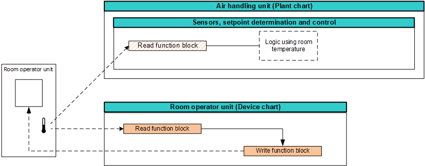
设备图表从 PL-Link 设备读取传感器值，并将用于监控目的的值写入 PL-Link 设备。工厂图表从 PL-Link 设备并行读取相同的传感器值，并根据工厂逻辑处理该值。

感官部分是整个模式的一个子组成部分。如果不使用用于监控目的的反馈，也可以在没有设备图表的情况下使用。
当没有可用的设备图表时，工厂图表直接从PL-Link设备读取传感器值，并根据工厂逻辑处理该值。
以下编程模式显示了此过程，考虑了 BACnet 对象、设备图表和工厂图表以及相关的读取、写入和命令功能块以及编程逻辑。 The example is based on the room temperature sensor value.
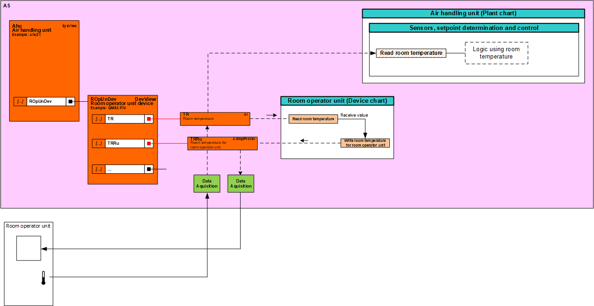
对于多个传感器值聚合，建议使用以下编程模式。
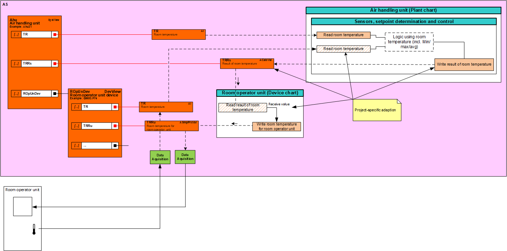
工厂图表处理不同的传感器值。结果值由工厂的 BACnet 对象拥有，被分配给设备图表并写入 PL-Link 设备。
有关与共享对象机制相关的外部传感器值的特殊处理，请参阅“共享对象处理”一章。
Programming pattern: Shared object value
Programming pattern: Operation value without feedback
房间操作员单元可以在没有任何反馈依赖性的情况下触发操作。对于这种不依赖反馈的运算值处理，建议在设备图中采用以下编程模式。
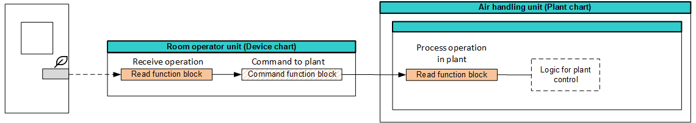
设备图表从 PL-Link 设备读取操作值（通常是更新指示）并将该值命令到工厂图表。工厂图表根据工厂逻辑处理值。
以下设计图显示了考虑 BACnet 对象、设备图表和工厂图表以及相关的读取、写入和命令功能块以及编程逻辑的过程。该示例基于房间能效指示运算值的重置。
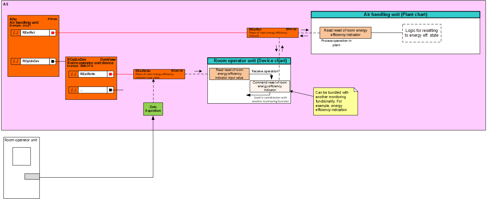
Programming pattern: Operation value with feedback
房间操作员单元可以触发具有反馈依赖性的操作。对于这种具有反馈依赖性的运算值处理，建议在设备图中采用以下编程模式。
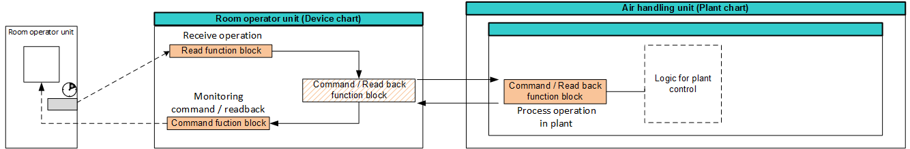
设备图表从 PL-Link 设备读取操作值，并将该值命令到设备图表。工厂图表根据工厂逻辑处理值。设备图表将结果操作值命令到 PL-Link 设备以进行监控。
以下设计图显示了考虑 BACnet 对象、设备图表和工厂图表以及相关的读取、写入和命令功能块以及编程逻辑的过程。该示例基于设定点偏移值。
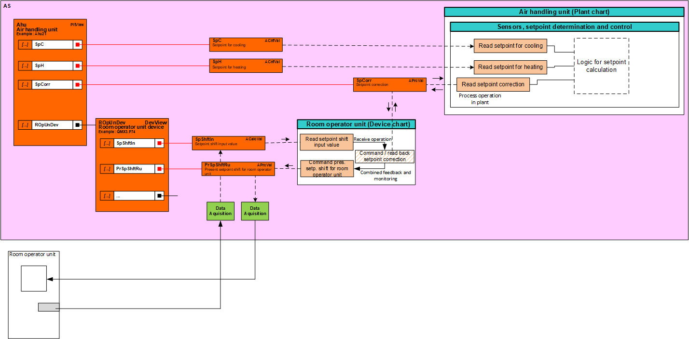
这种编程模式的好处主要体现在接近多个操作值触发。
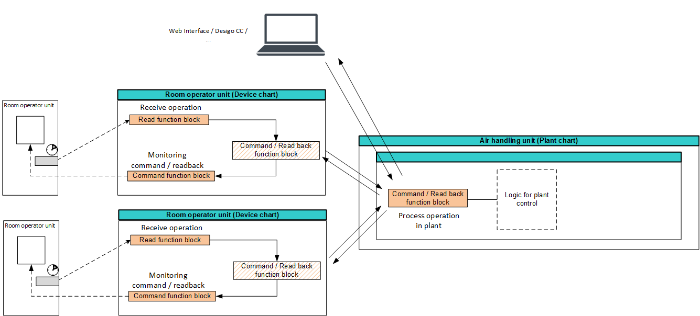
单个 BACnet 对象处理并同步所有房间操作员单元上的结果操作值。
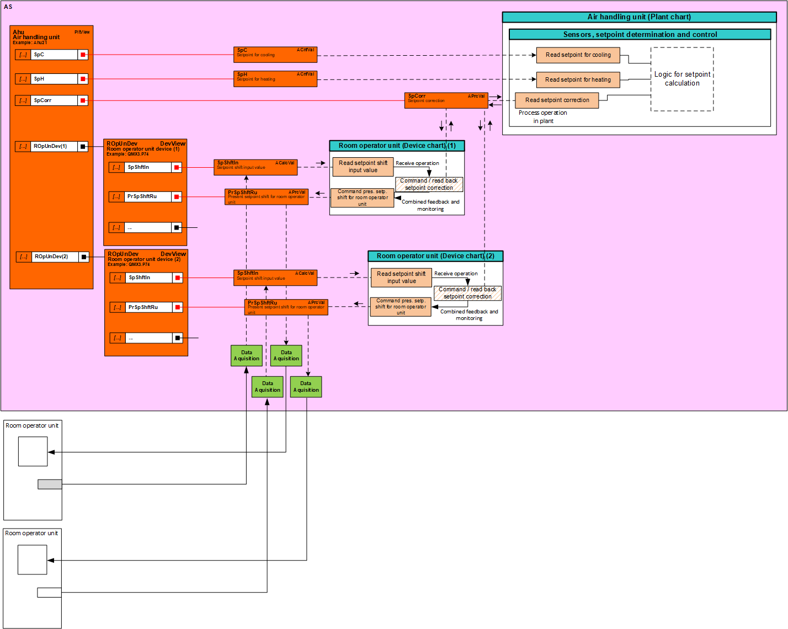
工厂图表使用工厂特定的评估逻辑来处理不同的操作值。结果值由工厂的 BACnet 对象拥有，被分配给设备图表并命令到 PL-Link 设备。
Programming pattern: Calculated value
房间传感器和通常的房间操作员单元监视工厂图表中的计算值。对于该计算值处理，在设备图表中推荐以下编程模式。
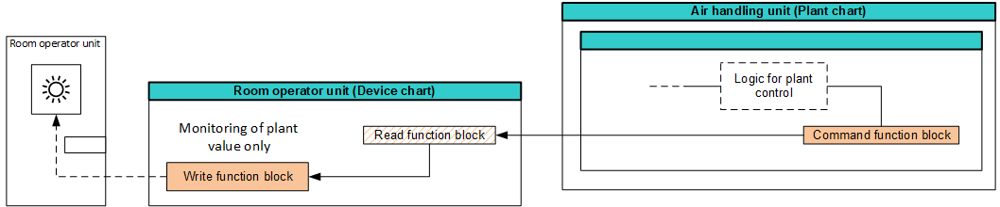
设备图表从设备读取计算值并将用于监控目的的值写入 PL-Link 设备。通常，设备图表中需要进行数据点映射转换。
以下设计图显示了此过程，考虑了 BACnet 对象、设备图表和工厂图表以及相关的读取、写入和命令功能块以及映射逻辑。该示例基于计算出的工厂运行模式值。
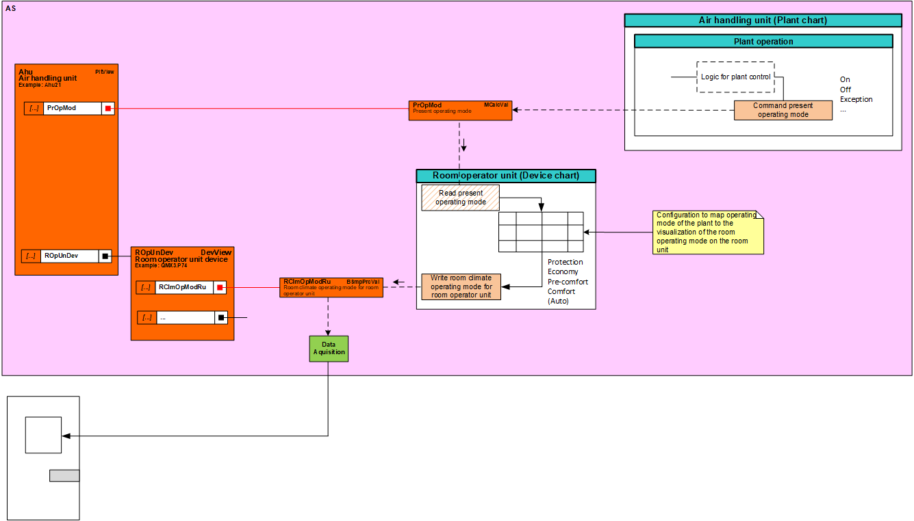
Programming pattern: Shared object value
实例化的 PL-Link 共享对象由 PL-Link 网络对象拥有。为了受益于共享对象的 PL-Link 广播通信机制，并且不增加所有设备图表中的通信逻辑，建议在工厂图表（或特殊广播图表）中使用以下编程模式。
工厂图表读取传感器值（例如本地 IO）并将该值命令到共享对象以进行监视。该值通过广播通信传送到同一区域内所有受影响的房间操作员单元并进行监控。
以下设计图显示了考虑 BACnet 对象、设备图表和工厂图表以及相关的读取、写入和命令功能块以及编程逻辑的过程。该示例基于外部气温值。
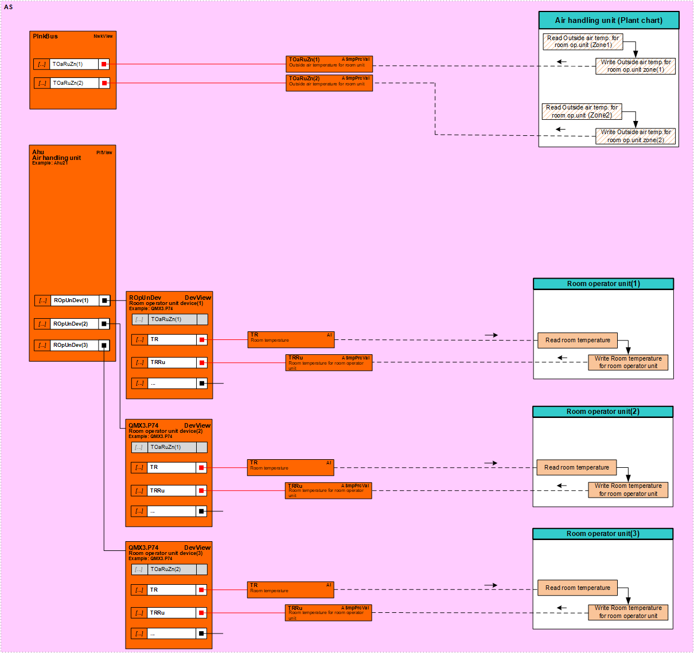
PL - 链接共享对象没有库支持。从库复制 PL 链接设备后，必须始终手动将相应的共享 BACnet 对象重新分配给工厂图表中的写入功能块。
有关共享对象的处理，请参阅“共享对象处理”一章。
Handling shared objects